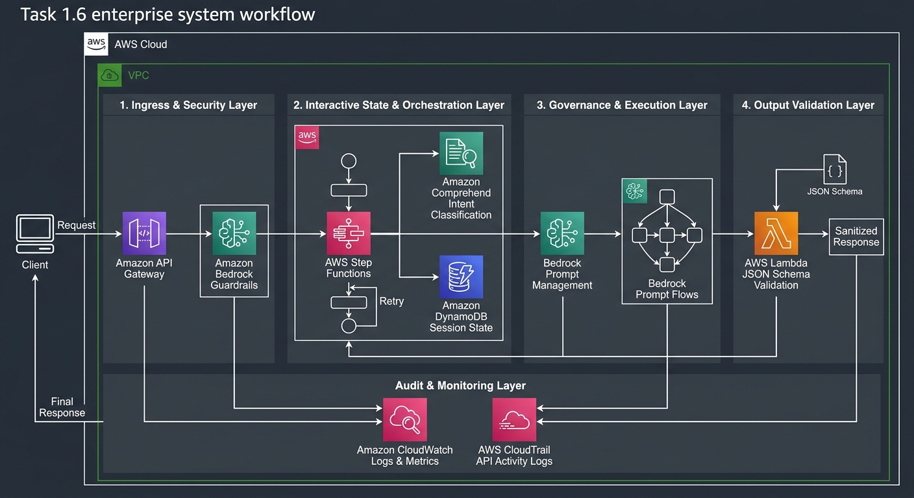

In a regulated enterprise environment (e.g., global banking or healthcare), a prompt is a code artifact. Changing a single line in a system prompt is functionally equivalent to deploying new application logic to production. It requires formal code review, compliance approval, automated testing, version controls, and continuous auditability.

In a regulated enterprise environment (e.g., global banking or healthcare), a prompt is a code artifact. Changing a single line in a system prompt is functionally equivalent to deploying new application logic to production. It requires formal code review, compliance approval, automated testing, version controls, and continuous auditability.
System Request Flow
│
▼
┌──────────────────────────────────────────────────────────────────────┐
│ Layer 1: Prompt Management (System Prompt) │
│ Role, Persona, Constraints ("Do this / Do NOT do this") │
└───────────────────────────────────┬──────────────────────────────────┘
│
▼
┌──────────────────────────────────────────────────────────────────────┐
│ Layer 2: Bedrock Guardrails (Outside Model Security Layer) │
│ Content Filtering, PII Masking, Denied Topics, Contextual Grounding │
└───────────────────────────────────┬──────────────────────────────────┘
│
▼
┌──────────────────────────────────────────────────────────────────────┐
│ Layer 3: JSON Schema Response Templates (Structural Enforcement) │
│ Enforces output shape and required legal/disclaimer fields │
└──────────────────────────────────────────────────────────────────────┘
To achieve absolute control over Foundation Model (FM) outputs, you must implement a three-tiered control architecture. No single layer is sufficient on its own.
Prompt Management ──► "Behave like this" (Instruct) Bedrock Guardrails ──► "Never say this" (Block) JSON Schema ──► "Answer in this shape" (Structure)
The System Prompt persists across the entire multi-turn interaction window. In regulated domains, defining constraints (what the AI is forbidden to do) takes priority over standard instructions.
Guardrails operate outside the model and outside the prompt. They sit as an independent security perimeter between the user request, the FM, and the downstream output.
Content Filter Categories & Severity Thresholds
Regulated Domain Controls
While text-based system prompts instruct the model to include certain elements, FMs remain probabilistic and may occasionally omit compliance language. Enforcing a JSON Schema makes structural compliance deterministic.
{
"$schema": "http://json-schema.org/draft-07/schema#",
"type": "object",
"properties": {
"account_number": {
"type": "string",
"description": "Masked account number, e.g., ****1234"
},
"balance": {
"type": "number"
},
"currency": {
"type": "string"
},
"fees": {
"type": "array",
"items": {
"type": "object",
"properties": {
"fee_name": { "type": "string" },
"amount": { "type": "number" },
"disclaimer": { "type": "string" }
},
"required": ["fee_name", "amount", "disclaimer"]
}
}
},
"required": ["account_number", "balance", "currency", "fees"]
}
Why JSON Schema is Crucial (Comparison with Task 1.1)
Foundation Models are inherently stateless (Memory=0). Every invocation of Bedrock:InvokeModel operates without memory of prior calls. Building multi-turn conversational systems requires an external state management infrastructure.
[User Request]
│
▼
┌─────────────────────────────────────────────────────────────────────────┐
│ AWS Step Functions (State Machine) │
│ Holds conversation state, tracks turns, triggers clarification loops │
└──────────────────────────────────────┬────────────────────────────────┘
│
┌─────────────────┴─────────────────┐
▼ ▼
┌────────────────────────────────────────┐ ┌──────────────────────────────┐
│ Amazon Comprehend (Custom Classifier) │ │ Amazon DynamoDB │
│ Fast, deterministic intent extraction │ │ Low-latency multi-turn history│
│ Returns confidence scores (0.0 - 1.0) │ │ 90-day TTL compliance enforcement│
└────────────────────────────────────────┘ └──────────────────────────────┘
Single AWS Lambda functions are stateless and time-bound. Multi-turn dialogues require a state machine to track context, manage retry loops, and direct routing.
Execution Flow
Input → Intent Detection → Confidence Check Low (< 0.70) → Ask Clarification → Re-evaluate
While FMs can classify intents, using a dedicated, custom-trained Amazon Comprehend model is the architecturally preferred choice for intent routing.
DynamoDB provides single-digit millisecond state lookup to construct the prompt history dynamically for each turn.
Time-to-Live (TTL) as a Compliance Control: The Concept — Setting a 90-day TTL attribute automatically expires and purges session records. The Governance Meaning — TTL is not merely database hygiene—it is an automated Regulatory Data Retention Enforcer. It guarantees compliance with data privacy mandates (e.g., GDPR "Right to be Forgotten") without requiring custom cron scripts or manual deletion pipelines.
Treating prompts as production code requires formal management frameworks, role isolation, and audit trails.
Instead of writing 30 distinct prompt files for 30 operating regions—which leads to prompt drift where updates fail to propagate evenly—you maintain one parameterized template.
You are the authorized virtual assistant for {{bank_name}}.
Customer Profile: {{customer_name}}, Tier: {{customer_tier}}
Account Type: {{account_type}}
Operating Region: {{region}} — Regulatory Framework: {{regulatory_framework}}
Mandatory Compliance Text: {{required_disclaimers}}
User Query: {{query}}
Runtime Injection: The backend application queries local database configurations (e.g., DynamoDB tables in ap-south-1 for India or us-east-1 for US) and injects region-specific rules dynamically at runtime.
Automated CI/CD pipelines must contain explicit, non-bypassable human approval gates before prompt deployments.
[Prompt Author] ──► [Compliance Reviewer] ──► [System Administrator] (Product Specialist) (Legal/Regulatory) (Production Deployer)
Prompts stored in Bedrock Prompt Management or S3 repositories are explicitly versioned (e.g., v7, v8).
Service, Recorded Data, Purpose & Retention:
| Service | Recorded Data | Purpose & Retention |
|---|---|---|
| AWS CloudTrail | API Call Metadata (Who called InvokeModel, timestamp, caller identity, exact prompt ARN/version used, target model ID). | Audit Trail: Kept for 7 Years for regulatory investigations (e.g., proving which prompt version was live when a complaint occurred). |
| Amazon CloudWatch Logs | Full Payload Contents (Complete prompt text sent, full response returned, token counts, execution latency). | Operational Debugging & Performance: Used for real-time error tracking and performance tuning. |
Because FMs are non-deterministic, traditional unit testing (assert output == expected_string) fails. A multi-layered testing strategy is required.
QA Execution Pipeline
│
┌──────────────────────┴──────────────────────┐
▼ ▼
[Pre-Deployment Testing] [Production Monitoring]
│ │
├─► Edge Case Testing (Step Functions) ├─► Real-time Output Validation (Lambda)
└─► Regression Testing (Golden Dataset) └─► Continuous KPI Dashboards (CloudWatch)
Executed synchronously on every response before returning data to the customer.
Failures rarely occur in standard scenarios ("Check account balance"). They manifest at boundary conditions.
Fixing a prompt to resolve one issue often degrades performance on another scenario.
| Test Scenario | v7 (Current Live) | v8 (Candidate) | Status |
|---|---|---|---|
| Joint Accounts | 62% Pass | 94% Pass | Improved |
| Intl Transfers | 91% Pass | 73% Pass | REGRESSED (BLOCKED) |
| Balance Inquiries | 98% Pass | 97% Pass | Acceptable |
Mechanism: Both v7 and v8 are run against a static Golden Dataset. If v8 causes a performance drop on existing functionality (e.g., International Transfers dropping from 91% to 73%), the pipeline flags a Prompt Regression and blocks deployment.
Prompt engineering techniques optimize model accuracy without requiring costly model retraining or fine-tuning.
Performance Enhancements
│
┌────────────────────────────┼────────────────────────────┐
▼ ▼ ▼
Structured Inputs Output Format Spec Chain-of-Thought
(Pre-parsed JSON payload) (XML/JSON field constraints) (Step-by-step reasoning)
│ │ │
└────────────────────────────┼────────────────────────────┘
▼
Agent Feedback Loops
(CSAT + Human Agent Edits)
Instead of requiring the FM to parse unstructured conversational queries, the system preprocesses raw text into structured JSON fields (using Amazon Comprehend entities) before passing them into the model:
{
"intent": "EARLY_WITHDRAWAL_FEE",
"product": "fixed_deposit",
"amount": 500000,
"opened_date": "2024-03-15",
"tenure_remaining_months": 12,
"customer_tier": "premium",
"region": "IN"
}
Impact: Eliminates token waste on intent interpretation, allowing the FM to dedicate its full context capacity to precise logic and generation.
Requiring explicit XML or JSON key-value outputs forces the FM to compute exact values rather than returning conversational approximations (e.g., returning "fee_amount": 150.00 instead of "There might be a small fee").
Instructing the model to "Think step by step" improves accuracy in complex financial calculations.
1. Identify principal ($500,000) and contract rate (6.5%). 2. Calculate accrued interest up to current date. 3. Lookup early withdrawal penalty percentage for 'Premium' tier (1.0%). 4. Subtract penalty from accrued interest. 5. Output final payout amount.
When an interaction escalates to a human support agent and the agent modifies the draft response generated by the AI, that edit is logged: Agent Edit ⇒ Identifies AI Error + Provides Ground-Truth Correction. Aggregated edits reveal weak scenarios, driving targeted updates to prompt templates (v9), which are then validated through regression testing before deployment.
For multi-step, enterprise-wide workflows (e.g., Mortgage Prequalification), single-prompt executions are insufficient.
Workflow Orchestration
│
┌─────────────────────┴─────────────────────┐
▼ ▼
Amazon Bedrock Prompt Flows Amazon Bedrock Agents
(Deterministic Graph) (Autonomous Reasoning)
│ │
• Path: Pre-defined Graph • Path: Decided by Model
• Execution: Identical every time • Execution: Dynamic / Variable
• Compliance: Fully Auditable • Compliance: Complex to Audit
Prompt Flows connect discrete steps into an explicit, directed acyclic graph (DAG).
Graph Execution
Input → [Pre-Processing] → [Prompt: Profile] → [Condition Node] → [Prompt: Match] → [Post-Processing] → Output
| Architectural Attribute | Bedrock Prompt Flows | Bedrock Agents |
|---|---|---|
| Execution Path | Deterministic: Graph paths, branch conditions, and fallback rules are defined in advance. | Dynamic: The model uses ReAct (Reasoning + Acting) logic to select tools and steps at runtime. |
| Behavioral Consistency | Identical: Given the same input and state, the exact same node path executes every time. | Variable: The model may select different tool call sequences across identical requests. |
| Auditability & Compliance | High: Fully auditable. Regulators can inspect the fixed execution graph. | Medium/Low: Difficult to audit due to non-deterministic tool choice. |
| Primary Industry Fit | Regulated Industries: Banking, Insurance, Healthcare, Legal. | Exploratory Tasks: Open-ended research, dynamic troubleshooting, general assistant workflows. |
To assist with exam preparation, the table below highlights how concepts in Task 1.6 build upon or differ from earlier tasks:
| Domain / Concept | Task 1.1–1.5 Focus | Task 1.6 Governance Focus |
|---|---|---|
| Model Security | Base model evaluation, raw prompt construction, basic RAG baseline architecture. | Three-Layer Guardrail Architecture: System Prompts + Bedrock Guardrails + JSON Schemas working in tandem. |
| State & Data Storage | Storing documents in Vector Stores (Task 1.4) and chunking strategies (Task 1.3). | Session State Persistence: DynamoDB TTL as a regulatory compliance control; Step Functions for stateful conversation orchestration. |
| Testing & Failures | Red Teaming for base model jailbreaks (Task 1.2) and data drift monitoring. | Prompt Regression Testing: Evaluating v8 vs v7 prompts against static Golden Datasets to prevent business logic degradation. |
| Workflow Design | Basic Agent creation and tool integration. | Prompt Flows vs. Agents: Selecting deterministic, auditable node graphs (Prompt Flows) over autonomous Agents for regulated compliance workflows. |